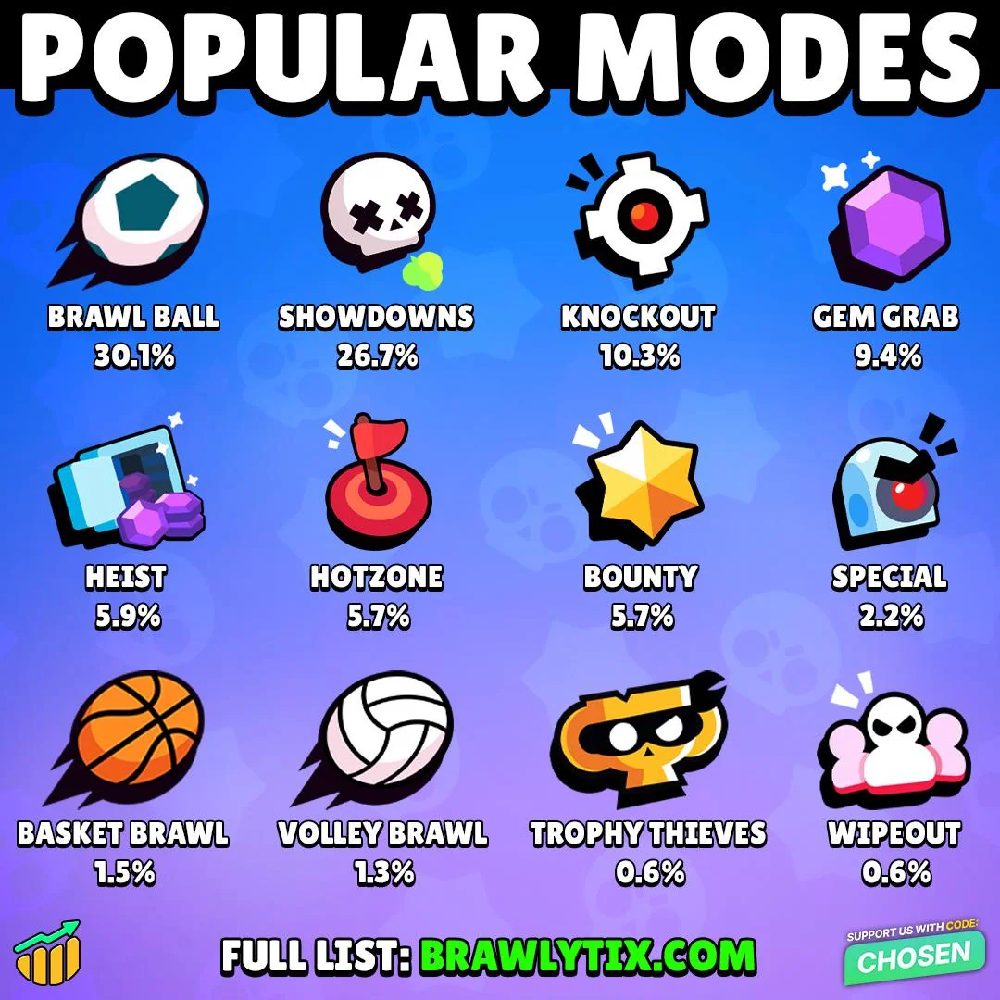
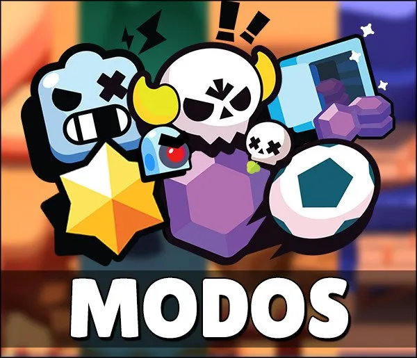
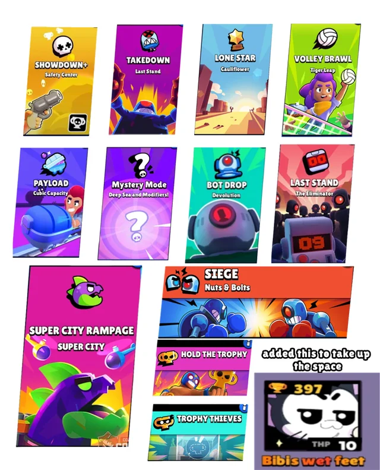
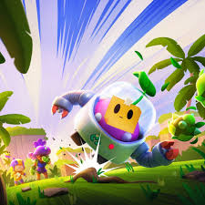
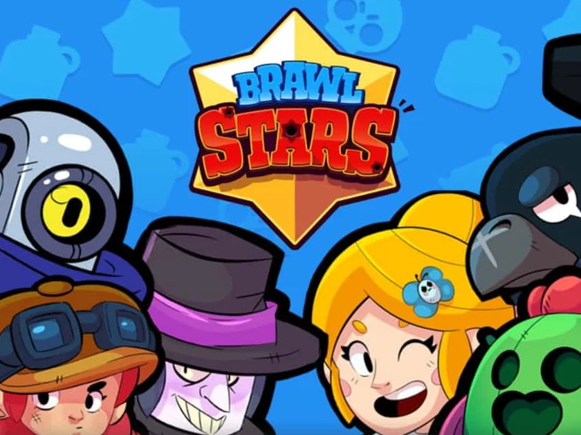
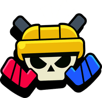

Acerca dos modos de jogo
O Brawl Stars, desenvolvido pela Supercell, apresenta vários modos de jogo que diferem nos objetivos, estratégias e dinâmica das partidas. Essa diversidade é um dos fatores que mantém o jogo interessante, pois cada modo exige habilidades e formas de jogar diferentes, além de incentivar o trabalho em equipa e o pensamento estratégico.
-Gem Grab
O Gem Grab é um dos modos principais do jogo e normalmente é jogado em equipas de três jogadores contra três adversários. Durante a partida, uma mina localizada no centro do mapa produz gemas ao longo do tempo. O objetivo da equipa é recolher 10 gemas e mantê-las durante uma contagem regressiva de 15 segundos para vencer.
Se o jogador que possui muitas gemas for derrotado, todas as gemas caem no chão, podendo ser recolhidas pela equipa adversária. Por isso, este modo exige cooperação entre os jogadores, normalmente com um jogador responsável por recolher gemas (carrier) e os outros por proteger ou atacar.
-Showdown
O Showdown é um modo de sobrevivência inspirado no estilo battle royale. Pode ser jogado de forma individual (Solo Showdown) ou em dupla (Duo Showdown). Vários jogadores entram num mapa grande e o objetivo é ser o último sobrevivente. Pelo mapa existem caixas chamadas Power Cube Boxes. Ao destruí-las, os jogadores ganham Power Cubes, que aumentam o dano e a vida do Brawler. Com o passar do tempo, uma névoa tóxica começa a fechar o mapa, obrigando os jogadores a aproximarem-se e aumentando a intensidade dos confrontos.
-Brawl Ball
O Brawl Ball é um modo inspirado no futebol. Duas equipas de três jogadores competem para marcar dois golos na baliza adversária. Os jogadores podem passar a bola, chutar ou utilizá-la estrategicamente para avançar no mapa. Durante o jogo, é possível atacar adversários normalmente com as habilidades dos Brawlers. Se um jogador com a bola for derrotado, a bola fica no chão até ser apanhada novamente. Este modo destaca-se pela rapidez e pela necessidade de coordenação entre os membros da equipa.
-Heist
No modo Heist, duas equipas enfrentam-se com um objetivo específico: destruir o cofre da equipa adversária enquanto defendem o seu próprio cofre. Cada equipa começa o jogo perto do seu cofre e precisa atravessar o mapa para atacar o do adversário. Alguns Brawlers são mais eficazes neste modo devido ao seu alto dano ou capacidade de causar dano contínuo ao cofre. Estratégias como dividir a equipa entre ataque e defesa são muito comuns.
-Bounty
No Bounty, os jogadores ganham estrelas ao derrotar adversários. Cada jogador começa com duas estrelas e, quanto mais eliminações fizer sem ser derrotado, mais estrelas passa a valer. O objetivo é terminar a partida com mais estrelas do que a equipa adversária. No final da partida, a equipa com mais estrelas vence. Este modo valoriza muito a precisão, a paciência e o controlo do mapa. Outros modos e eventos especiais
-Além dos modos principais, Brawl Stars também inclui eventos especiais e modos temporários, como Knockout, Hot Zone e desafios sazonais. Estes modos costumam ter regras diferentes e são frequentemente usados em competições e eventos dentro do jogo.
Graças à grande variedade de modos de jogo, Brawl Stars consegue oferecer experiências diferentes dentro do mesmo jogo. Cada modo exige estratégias próprias, escolha adequada de Brawlers e trabalho em equipa, o que contribui para a profundidade e competitividade do jogo.
Galeria





